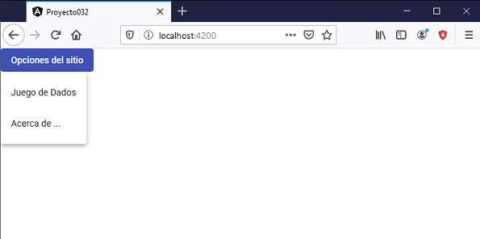
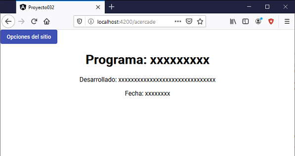

50 - Angular Material: Menu - mat-menu
Un menú es un panel flotante que muestra una lista de opciones. Haremos un problema para recordar el tema de rutas e incorpararemos Angular Material con un menú de opciones.
Problema
Implementar una aplicación que muestre un menú de opciones en la parte superior de la página que acceda el primero al juego de tres dados que habíamos desarrollado en ejercicios anteriores. El segundo enlace debe mostrar mediante otra ruta el nombre del programador, versión y fecha de desarrollo.
Crearemos primero el proyecto
ng new proyecto032 --routing
Procedemos a instalar todas las dependencias de Angular Material ayudados por Angular CLI mediante el comando 'add':
ng add @angular/material
-
En la carpeta app se crea el archivo 'app-routing.module.ts', lo modificamos con el siguiente contenido:
import { NgModule } from '@angular/core'; import { Routes, RouterModule } from '@angular/router'; import { JuegodadosComponent } from './juegodados/juegodados.component'; import { AcercadeComponent } from './acercade/acercade.component'; const routes: Routes = [ { path:'juegodados', component:JuegodadosComponent }, { path:'acercade', component:AcercadeComponent } ]; @NgModule({ imports: [RouterModule.forRoot(routes)], exports: [RouterModule] }) export class AppRoutingModule { }Por el momento debe mostrar un error cuando iniciamos los nombres de las componentes 'JuegodadosComponent' y 'AcercadeComponent' debido que no las hemos codificado aún.
-
Desde la línea de comandos de Node.js procedemos a crear cada una de las tres componentes que faltan en la aplicación:
ng generate component juegodados
Codificamos dos archivos:
juegodados.component.ts
import { Component, OnInit } from '@angular/core'; @Component({ selector: 'app-juegodados', templateUrl: './juegodados.component.html', styleUrls: ['./juegodados.component.css'] }) export class JuegodadosComponent implements OnInit { valor1: number; valor2: number; valor3: number; resultado!: string; constructor() { this.valor1 = this.retornarAleatorio(); this.valor2 = this.retornarAleatorio(); this.valor3 = this.retornarAleatorio(); } retornarAleatorio() { return Math.trunc(Math.random() * 6) + 1; } tirar() { this.valor1 = this.retornarAleatorio(); this.valor2 = this.retornarAleatorio(); this.valor3 = this.retornarAleatorio(); if (this.valor1==this.valor2 && this.valor1==this.valor3) this.resultado='Ganó'; else this.resultado='Perdió'; } ngOnInit() { } }juegodados.component.html
<app-dado [valor]="valor1"></app-dado> <app-dado [valor]="valor2"></app-dado> <app-dado [valor]="valor3"></app-dado> <hr> <button mat-raised-button (click)="tirar()">Tirar</button> <hr> <p>Resultado:{{resultado}}</p>Generamos ahora la componente 'dado':
ng generate component dado
Codificamos sus tres archivos:
dado.component.ts
import { Component, OnInit,Input } from '@angular/core'; @Component({ selector: 'app-dado', templateUrl: './dado.component.html', styleUrls: ['./dado.component.css'] }) export class DadoComponent implements OnInit { @Input() valor!: number; constructor() { } ngOnInit() { } }dado.component.html
<div class="forma"> {{valor}} </div>dado.component.css
.forma { width: 5rem; height: 5rem; font-size: 3rem; color:white; background-color: black; border-radius: 1rem; display: inline-flex; justify-content: center; align-items: center; margin:10px; }Finalmente creamos la última componente:
ng generate component acercade
Modificamos el archivo 'acercade.component.html':
<h1>Programa: xxxxxxxxx</h1> <p>Desarrollado: xxxxxxxxxxxxxxxxxxxxxxxxxxxxxxx</p> <p>Fecha: xxxxxxxx</p>
-
Si abrimos ahora el archivo app.module.ts tenemos declarados las 4 componentes e importado el módulo AppRoutingModule, también importamos los módulos MatButtonModule y MatMenuModule:
import { BrowserModule } from '@angular/platform-browser'; import { NgModule } from '@angular/core'; import { AppRoutingModule } from './app-routing.module'; import { AppComponent } from './app.component'; import { BrowserAnimationsModule } from '@angular/platform-browser/animations'; import { JuegodadosComponent } from './juegodados/juegodados.component'; import { DadoComponent } from './dado/dado.component'; import { AcercadeComponent } from './acercade/acercade.component'; import { MatButtonModule } from '@angular/material/button'; import {MatMenuModule} from '@angular/material/menu'; @NgModule({ declarations: [ AppComponent, JuegodadosComponent, DadoComponent, AcercadeComponent ], imports: [ BrowserModule, AppRoutingModule, BrowserAnimationsModule, MatButtonModule, MatMenuModule ], providers: [], bootstrap: [AppComponent] }) export class AppModule { } -
Nos queda modificar la componente principal 'app.component.html':
<div style="text-align:left"> <button mat-flat-button [matMenuTriggerFor]="menu" color="primary">Opciones del sitio</button> <mat-menu #menu="matMenu"> <button mat-menu-item routerLink="/juegodados">Juego de Dados</button> <button mat-menu-item routerLink="/acercade">Acerca de ...</button> </mat-menu> </div> <div style="text-align:center"> <router-outlet></router-outlet> </div>Para crear las distintas opciones del menú disponemos la etiqueta mat-menu y dentro de esta una serie de botones con la propiedad mat-menu-item:
<button mat-flat-button [matMenuTriggerFor]="menu" color="primary">Opciones del sitio</button> <mat-menu #menu="matMenu"> <button mat-menu-item routerLink="/juegodados">Juego de Dados</button> <button mat-menu-item routerLink="/acercade">Acerca de ...</button> </mat-menu>Además hay una etiqueta button siempre visible con la propiedad [matMenuTriggerFor] que hace referencia a la propiedad #menu de la etiqueta mat-menu.
Mediante la etiqueta 'router-outlet' indicamos el lugar que debe mostrar la componente especificada por la ruta configurada en el archivo 'app-routing.module.ts'
Para cambiar de ruta mediante las opciones del menú debemos iniciar la propiedad 'routerLink' asignando la ruta respectiva.
Si ejecutamos ahora el proyecto:
ng server -o
Podemos ver distintos resultados según la ruta indicada y si esta visible el menú:

Si accedemos a la primer opción del menú(tener en cuenta que no se recarga la página, no hay una petición al servidor, sino se resuelve la ruta con aplicación Angular en el navegador):

Finalmente si accedemos a la otra opción:

Podemos probar esta aplicación en la web aquí.